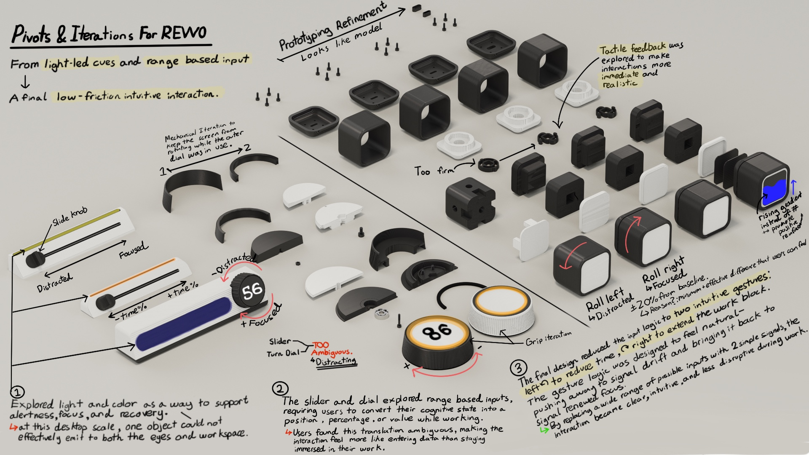

.jpg)
Revvo
Why are we still forcing our focus into rigid, linear clocks?
Revvo is an adaptive focus timer designed to help people enter flow naturally and protect it once it begins. Traditional timers often create pressure by starting before users are mentally ready and interrupting them once momentum has formed. Revvo instead adapts session length to the user’s cognitive rhythm in real time. By tilting the device right when focus is strong or left when it is slipping, users can adjust sessions without breaking concentration. Over time, these intuitive micro-interactions recalibrate the timer across different modes of work, making Revvo increasingly personalized. A filling progress gauge replaces the usual countdown, reframing time as momentum gained rather than time lost, offering positive reinforcement while reducing timer anxiety.
Category Product
Date 2025
Duration 6 Weeks
Skills Industrial Design, UX/UI, Prototyping
Traditional timers are rigid and intrusive.
Countdown anxiety and abrupt interruptions destroy the very focus they aim to protect.

Standard timers assume every task and every brain works on a fixed clock. They force a start when you're not ready and ring a loud alarm exactly when you've finally hit your stride, creating a cycle of stress rather than flow.
Objective
How can we design an adaptive study timer that protects users by working with their cognitive rhythm instead of fighting it?


.jpg)
.jpg)
Design Requirements
UX
Functionality
Well-being

Synchronizing with the Task
Revvo categorizes work into three distinct cognitive modes, selected by rotating the device's back face. Deep Work starts at 50 minutes and can adapt up to 90, while Task Work caps at 35 minutes for high-frequency output. Creative Work offers a flexible 30-60 minute window. Each mode uses a soft, non-intrusive chime to signal the end of a block, followed by a firmer secondary chime only if a hard stop is necessary to prevent burnout.
Rolling for Momentum
Interaction design focused on micro-movements that don't require the user to look away from their work. By rolling the device, the user communicates their internal state to the adaptive algorithm.
Roll Right Signals high momentum; extends the current work block by 20% to protect the flow state.
Roll Left Signals a dip in focus; decreases the baseline by 20%, prompting an earlier break to recharge.
Numberless Progress The gauge fills like a container, reframing time as momentum gained rather than a ticking clock.
Intuitive Control
Eliminating buttons reduces cognitive load. Every action is a physical metaphor for the user's intent.
Flip to Pause Placing the device upside down pauses the session instantly without resetting progress.
Roll to Back A deliberate roll to the rear face completes the session and logs the data for future recalibration.
Automatic Extension If the user remains in flow when the timer ends (detected by lack of motion), Revvo silently extends the session.